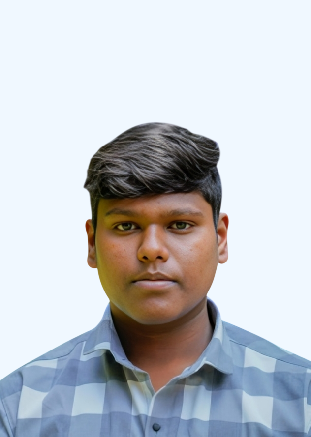

Highly motivated Electronics and Communication Engineering student with a strong interest in technology and a hands-on learning approach. Actively involved in academic projects and team initiatives, contributing effectively to collaborative efforts. Demonstrates a proactive and disciplined mindset that supports continuous personal development and overall team success.
Bachelor of Engineering in Electronics and Communication Engineering 2022-2026
Developed a cost-effective system using sensors and open-source tools for real-time monitoring of cattle health,
with data analysis and a user-friendly interface for early detection of health issues.